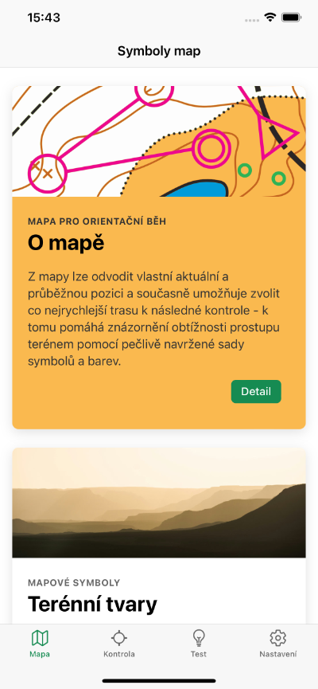
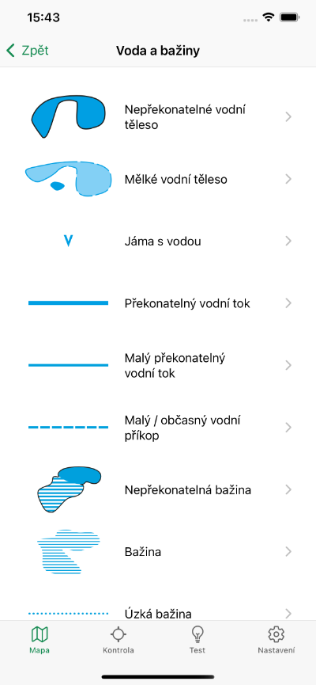
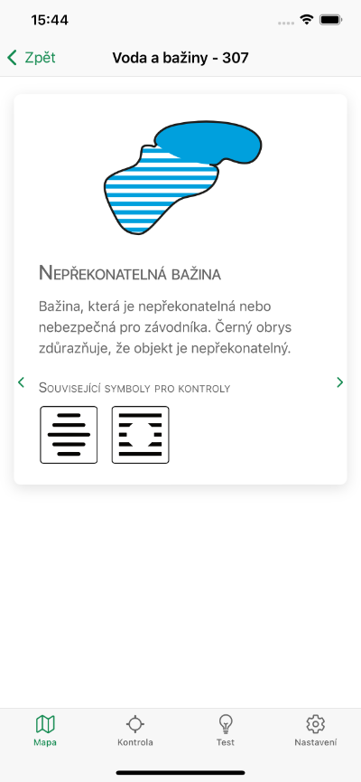
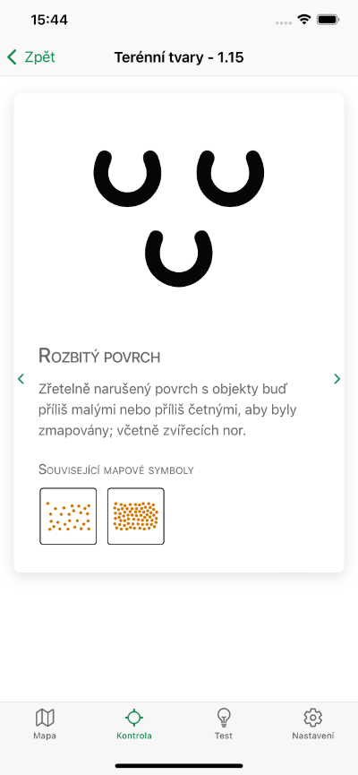
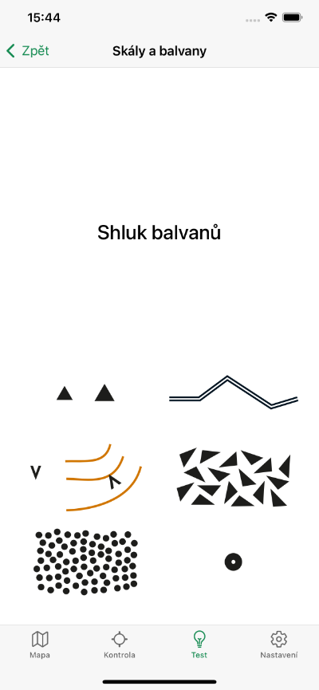
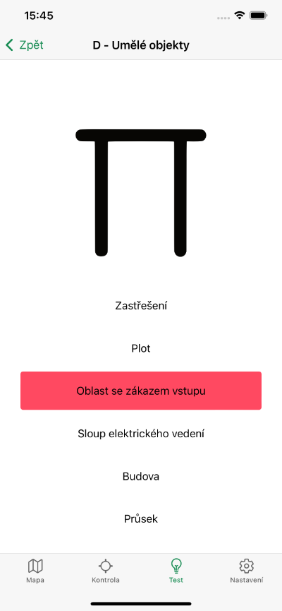
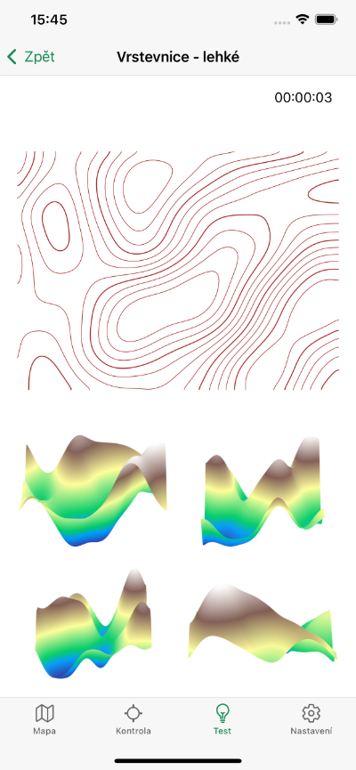
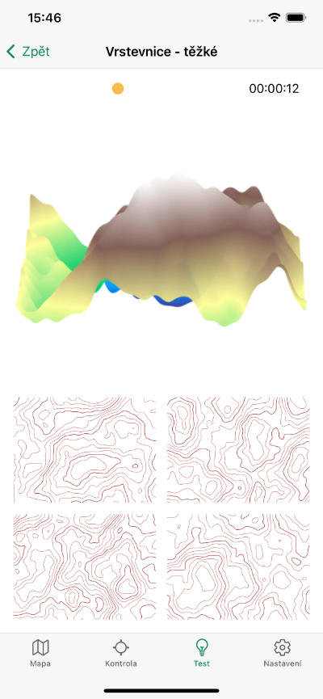

Orisym
Symboly pro orientační běh do kapsy










Co aplikace nabízí?
- Katalog mapových symbolů
- Katalog symbolů pro popis umístění kontrol
- Testování znalostí obou typů symbolů
- Procvičování poznávání terénu dle vrstevnic
- Funguje offline